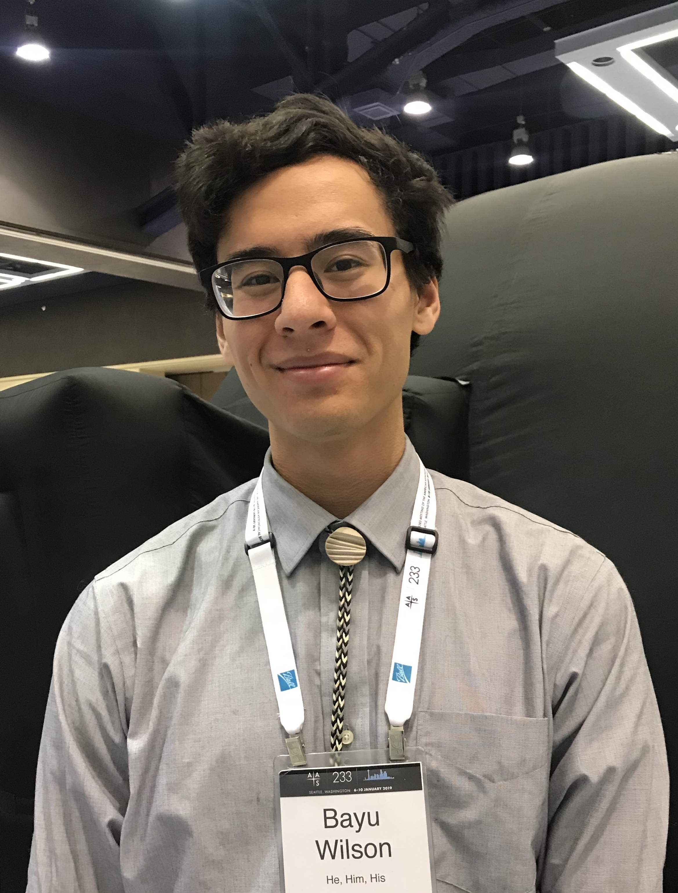

 I am a first year physics graduate student at the University of California, Riverside (UCR). I am interested in the thermal and spatial evolution of the intergalactic medium (IGM). I've yet to choose an advisor but plan to remain in the IGM group at UCR.
I am also interested in astronomy outreach. At my undergraduate university (University of Washington), I created the Mobile Planetarium Committee (MoPlaC), an undergraduate-run outreach group committed to astronomy outreach through horizontal partnership with educators that increase youth excitement for science. MoPlaC continues to grow and thrive in Seattle today.